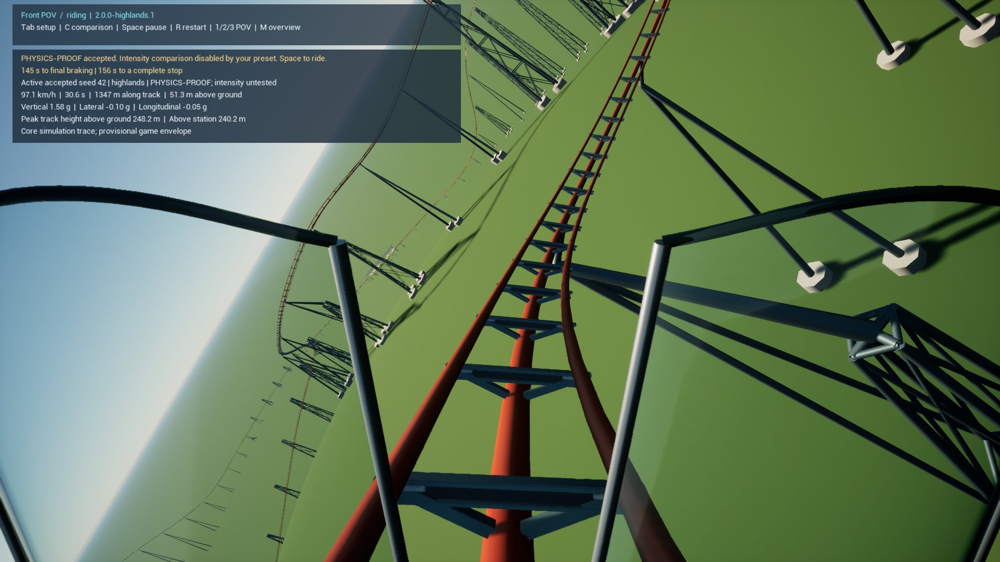
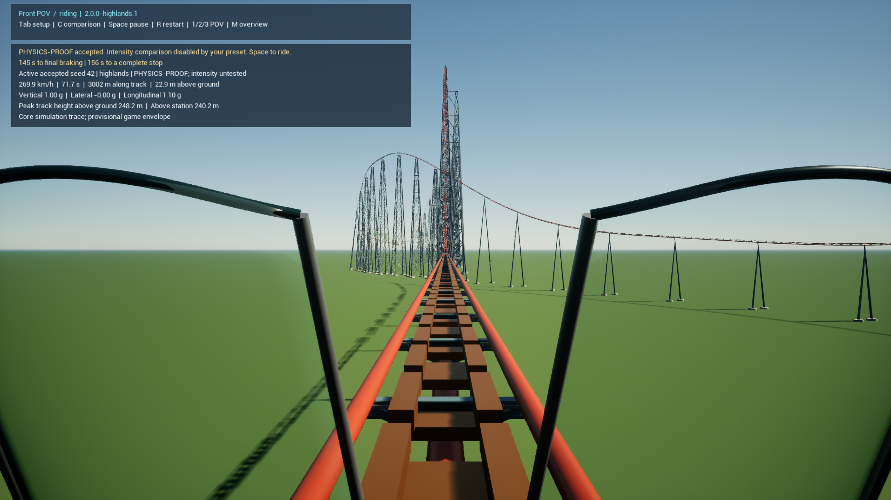
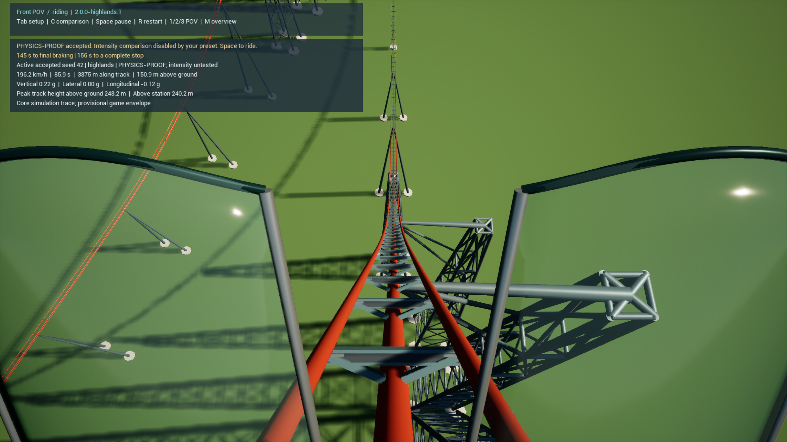
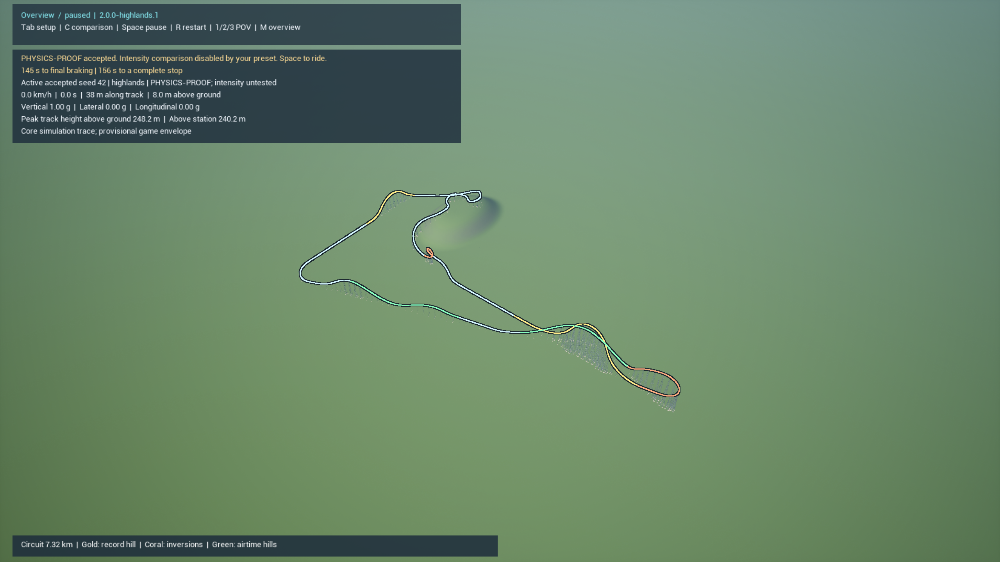
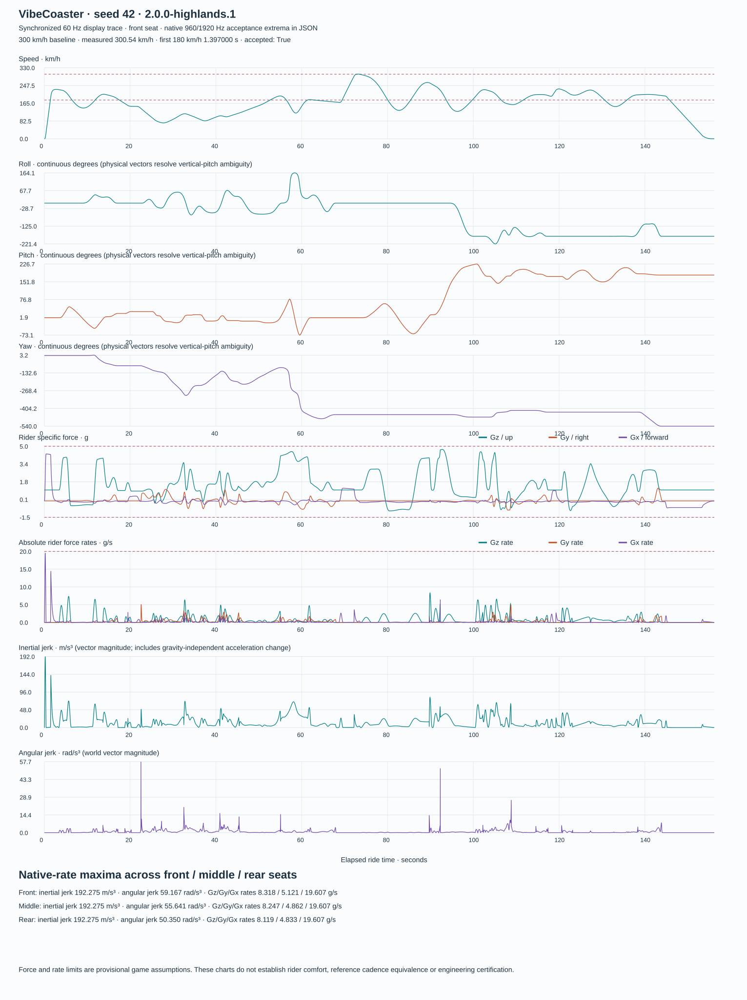

VIBECOASTER2 / 2.0.0-HIGHLANDS.1
A shaped climb. A winding ridge.
The packaged prototype passes native physics and actual GPU traversal. The camelback retains the accepted asymmetric photo fit, with the corrected flank and earlier crown. The green/slate terrain is an original rounded ridge, shared by the visible scene and clearance model.
300.54km/h measured maximum
1.397 sfirst attainment of 180 km/h
8 / 8representative cases pass
156.18 sbaseline complete stop
Play VibeCoaster2.lnk is in D:\Coding\Codex\Vibecoaster2. Press F9 to load the included verified ride, then Space. Enter generates selected settings; Tab opens setup; 1/2/3 change seats; M opens overview; R restarts; F5 saves.
From the exact packaged executable

Loaded winding ridge. Terrain is a broad landform, not a rail clearance cutout.
Real operation locations drive the visible LSM and brake assemblies.
Planar giant dive; the asymmetric shape remains independent of seed placement.
Baseline whole circuit, 7.32 km. Other seeds change ridge and return composition.Untouched 2560×1440 captured frames. The automated full ride passed; sampled screenshots do not establish subjective feel.
Synchronized motion
Choose a representative seat. Roll, pitch, yaw, speed, Gx/Gy/Gz, body-axis rates and jerk share one ride-time axis. These plots use the 60 Hz display trace; native acceptance and peak measurements use 960/1920 Hz and spatial refinement.
Open full chart
Seed and parameter coverage
| Case | Composition | Length | Stop | Result |
|---|
| baseline-42 | spiral-ridge
flowing-return | 7322 m | 156.2 s | PASS |
| seed-1 | spiral-ridge
twin-airtime-return | 7692 m | 165.1 s | PASS |
| seed-5 | spiral-ridge
flowing-return | 7312 m | 156.3 s | PASS |
| seed-77 | weaving-ridge
twin-airtime-return | 7801 m | 169.9 s | PASS |
| twin-2718 | spiral-ridge
twin-airtime-return | 7846 m | 168.4 s | PASS |
| flowing-7 | weaving-ridge
flowing-return | 7676 m | 165.9 s | PASS |
| higher-314 | weaving-ridge
flowing-return | 7532 m | 161.1 s | PASS |
| lower-42 | spiral-ridge
flowing-return | 7100 m | 153.1 s | PASS |
All use unchanged force/rate/clearance gates. The same file and geometry hashes survived the separate rear-seat process. 21 native suites and six Unreal automation tests pass.
What remains to judge
The Immelmann remains about 194 m above ground. Its altitude, signature excitement and perceived roll/pacing still need a ride review. Terrain detailing is intentionally simple. The lower-drag trim case reaches 4.973 Gz, close to the +5 cap.
This is a prototype physics model, not F2291 certification or calibrated manufacturer hardware. Full operating-envelope, structural, restraint, suspension and magnetic-gap/thermal design remain open.
Complete measurements and limitations · Build hashes and evidence manifest · Accepted camelback photo fit